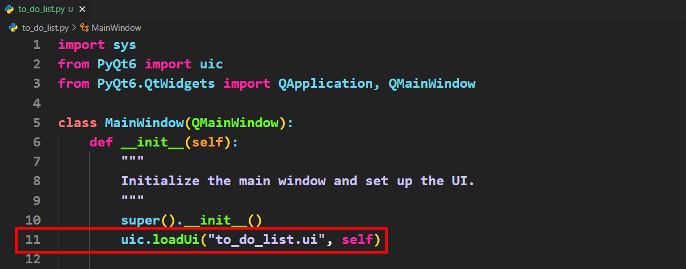
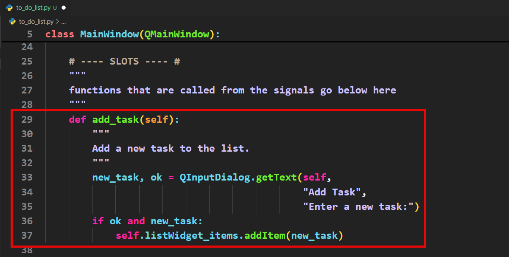
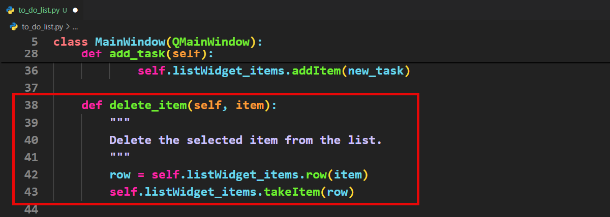
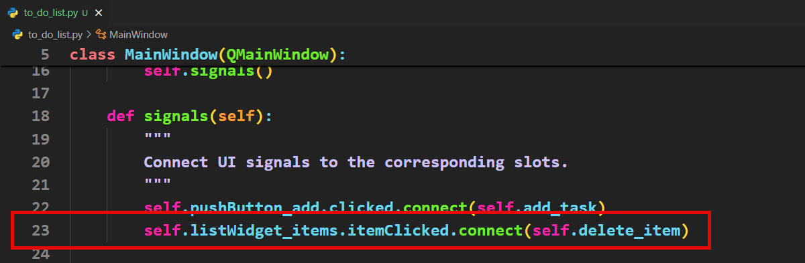

Tutorial 14 - Basic To Do¶
In this tutorial, you will:
Utilise a QLineEdit widget to set and display the to-do list’s title.
Implement a QPushButton that, when clicked, opens an input dialog box for entering new tasks.
Use a QListWidget to show all added tasks, ensuring they are visible and organised.
Enable item removal from the list by connecting the QListWidget’s itemClicked signal to a function that deletes the selected task.
In this tutorial we will implement the basic features of our To Do App:
Naming the to do list
Adding items to the to do list
Display all the items on the list
Removing items from the to do list
Basic To Do Planning¶
How can we achieve the objective above?
Naming the list is already taken care of since the user can type in the QLineEdit widget. So we only have to plan the implementation of adding and subtracting items.
We are going to use the QWidgetList as the data structure for storing our tasks.
We will use the pushButton_add to add items. It will launch a Input Dialogue Box where the user can type in their new item. The item will then be added to our list.
Dialog Boxes
Qt dialogue boxes are special pop-up windows that let your program talk to the user or ask them for input. For example, you can use a message box to show a warning, a file dialog to let the user open or save files, or an input box to ask for their name. These boxes are ready-made by Qt, so you don’t have to design them yourself—they just work with a few lines of code!
We will be using some of the dialog boxes. To explore the rest of them, go to the Qt documentation.
The listWidget has a signal for when an item is clicked. We can use this to delete items from our list.
Basic To Do Code¶
To start:
copy your new boilerplate
rename it
to_do_app.pythen change the
loadUifile →to_do_list.ui

This code is going to be a little more complicated, so we are going to change our coding process. Rather then adding all the slots then the signals, we will work with slot/signal pairs. That way we can test that each slot/signal pair works.
Variables¶
We will not be using any variables for this app. Rather we will be storing all the data in the UI components.
Add item button¶
The first slot/signal pair that we are going code is for the Add item button
The the Slots section add the following code.

Tuple Unpacking
When a function returns a tuple—eg. (356, 892)—Python allows you to unpack those values straight into variables. line 33 is an example of this.
The QInputDialog returns two values in a tuple:
The content of the QInputDialog text box
A boolean indicating if the Ok button was clicked.
In line 33 we unpacked those two values straight into two variables—new_task and ok. This means that we can work with both independently.
Notice this code will write the new_task into the listWidget_items only if:
a value was entered into the dialog box
the user clicks the ok button (rather than cancel)
Now add connect the pushButton_add signal to the add_task slot.

Now lets test your app an make sure that it acts as expected.
The Add item button launches a Input Dialog
Entering a value in the Input Dialog and clicking Ok add a task to the Item Widget
Clicking Ok with no value in the Input Dialog does not add a task to the Item Widget
Clicking Cancel on the Input Dialog does not add a task to the Item Widget
Click item¶
The itemWidget has a signal for when the user clicks it. We will use this signal to remove and item from our task list. In addition when this signal is triggered, it passes the item clicked. From the item we extract its row number, which is the information needed to delete it from the list.
In the slot section enter the following code.

We now need to connect this slot to its signal

Test your app. Make sure that clicking on an item removes it from your list.